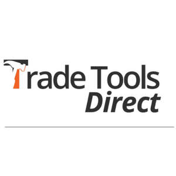

Trade Mark Journal No.2025/028 11 July 2025
UK00004224259 25 June 2025 (6,7,8,18,25,26)

- Class 6
- Metal materials for construction; Metal materials for building and construction; Building and construction materials and elements of metal; Reinforcement materials (Metal -) for construction; Materials of metal for railway construction; Road construction materials of metal; Refractory construction materials of metal; Construction materials of metal with soundproofing qualities; Steel building materials; Bridge bearings [construction materials] of metal; Metal building materials; Building materials of metal; Metal materials for building; Metallic building materials; Fired refractory materials of metal [building materials]; Metal reinforcement materials for building; Reinforcement materials (Metal -) for building; Scaffolding of metal for construction purposes; Building materials of metal with soundproofing qualities; Awnings of metal [building materials]; Road building materials (Metal -); Soffits [metal building materials]; Railway materials; Cladding of metal for construction and building; Paving materials (Metal -); Metal goods for use in construction; Building (Reinforcing materials of metal for -); Reinforcing materials of metal for building; Building components of metal for the construction of arches; Reinforcing materials of metal for buildings; Building materials (Metal -) in the form of panels.
- Class 7
- Tools for machine tools; Tools for use with machine tools; Tools for use in machine tools; Adapters for machine tools; Boring tools [machine tools]; Tool bits for use in power operated hand tools; Gear cutters [machine tools]; Cutting tools for use in powered hand-held tools; Air-powered tools; Broaches [machine tools]; Broaches being machine tools; Work clamps for machine tools; Machine tools; Tools [parts of machines]; Reamers [power tools]; Extensions for power tools; Reamers being machine tools; Cutters being machine tools; Reamers [machine tools]; Collets for power tools; Ceramic tips [tools for machines]; Precision machine tools; Grinders being power tools; Countersinks [power tools]; Tools for machines; Metalworking machine tools; Countersinks being machine tools; Hydraulic tools; Lathes [machine tools]; Power tools; Drills for machine tools; Ratchet hoists; Power-operated ratchet wrenches; Pneumatic ratchet wrenches; Air ratchet wrenches; Ratchet handles [machines]; Ratchet wrenches [machines]; Tension ratchets [machines]; Belt pulleys; Lift belts; Belt tensioners; Screw hoists; Machine tool couplings; Tool cutting machines; Tool holders for machines; Tool grinding machines; Tool bits for machines; Milling cutters [machine tool]; Dressers for blades [machine tool]; Collets [power tool parts]; Thread milling cutters [machine tool]; Tool bits for metalworking machines; Tools (Machine -) for reaming; Guidance frameworks for cutting tools [machine]; Rotary tool bits [machines]; Machine tools for cutting; Tools (Machine -) for cutting; Tool holders [parts of machines]; Notchers [machine tools]; Machine tools for slotting; Guidance frameworks for machine tools; Tools (Machine -) for drilling; Machine tools for drilling; Percussion tool bits for machines; Cemented carbide tips for tool bits; Automatic tool changers for industrial robots; Machine tools for sawing; Punches for use with machine tools; Machine tools for parting; Machine tools for sale in kit form; Machine tools for boring; Tools (Machine -) for boring; Tips for tool bits [parts of machines]; Countersinking tools for machines; Clamping devices for use with machine tools; Chisel heads [machine tools]; Taps [machine tools]; Taps being machine tools; Cutting inserts for machine tools; Drill presses [power tools]; Machine tools for grinding; Tools (Machine -) for grinding; Tools (Machine -) for use in packaging; Tube reamers [machine tools]; Forcible entry tools [powered tools]; Cutting tools [machine] in the form of drill bits; Punching tools [electric], other than for office use; Cutting tool blocks [parts of machines]; Mechanical tools; Powered tools; Awls [powered tools]; Burrs [power tools]; Planing tools [machines]; Drills [power tools]; Slotting tools for machines; Abrading tools for use with machines; Drilling tools for use with machines; Files [power-operated tools]; Machines for making tools; Edging tools [machines]; Pneumatic tools [machines]; Blades for power tools; Abrasive instruments [tools for machines]; Sharpening machines for tools (Electric -).
- Class 8
- Tool pouches for attachment to tool belts; Tool aprons; Tool belts; Tool vests; Rotary tool bits [hand-operated tools]; Tool holders; Tool belts [holders]; Belts (Tool -) [holders]; Boring tools [hand-operated tools]; Perforating tools [hand tools]; Stamping-out tools [hand tools]; Graving tools [hand tools]; Cutting tools [hand tools]; Rotary tools [hand-operated tools]; Diamond cutting tools for hand-operated tools; Countersinking tools for hand operated tools; Drywall finishing tools [hand tool]; Grafting tools [hand tools]; Hand-operated sharpening tools and instruments; Box saws [hand-operated tools]; Emergency cutting tools [hand tools]; Clamps [hand tools]; Screwdrivers [hand tools]; Edge tools [hand tools]; Drill chucks [parts of hand-operated tools]; Fulling tools [hand tools]; Rotary metal cutting tools [hand-operated tools]; Jigsaw blades [parts for hand-operated tools]; Sprayers for use in horticulture [hand tool]; Extensions for hand tools; Fireplace tool sets; Adjustable wrenches [hand tools]; Engraving pens [hand tool]; Miter boxes [hand tools]; Wire brushes [hand-operated tools]; Embossers [hand tools]; Reamers [hand tools]; Emergency multi-tools [hand tools]; Emergency spreading tools [hand tools]; Augers [hand tools]; Ratchet handles; Ratchet wrenches [hand tools]; Ratchet handles [hand-operated tools]; Tension ratchets [hand-operated tools]; Screw taps (Extension pieces for braces for -); Extension pieces for braces for screw taps; Screw wrenches; Adjustable spanners; Locking clamps [hand tools]; Screw spanners [wrenches]; Ratchets [hand tools]; Locking pliers; Scraping tools [hand tools]; Sprayers for use in agriculture [hand tool]; Punching hand tools, hand-operated, other than for office use; Files [tools]; Forcible entry tools [hand tools]; Hex tools; Hand-operated cutting tools; Scrapers [hand tools]; Tool bags [filled]; Spokeshaves being hand tools; Lifting tools; Countersinks [hand tools]; Files [hand tools]; Spanners [hand tools]; Drill holders [hand tools]; Wrenches [hand tools]; Honing tools [hand-operated]; Hand-operated tools for drilling; Punch pliers [hand tools]; Woodworking wrecking bars; Hand-operated tools for gardening; Scissors (Non-electric -) for wallpaper; Gardening scissors; Japanese grip scissors [Japanese thread clippers]; Agricultural, gardening and landscaping tools; Sewing scissors; Adzes [tools]; Chisels [hand tools]; Adzes [hand tools]; Saws [hand tools]; Shovels [hand tools]; Planers [hand tools]; Knives [hand tools]; Hatchets [hand tools]; Grindstones [hand tools]; Loppers [hand tools]; Drills [hand tools]; Hammers [hand tools]; Spatulas [hand tools]; Scribers [hand tools]; Bevels [hand-operated tools]; Hoes [hand tools]; Pruners [hand tools]; Blades [hand tools]; Nippers [hand tools]; Rasps [hand tools]; Ditchers [hand tools]; Rammers [hand tools]; Rammers being hand tools; Rakes [hand tools]; Tongs [hand tools]; Wheels (Sharpening -) [hand tools]; Sharpening wheels [hand tools]; Bits for hand-operated tools; Engravers [hand tools]; Routers [hand-operated tools]; Hand tools and implements (hand-operated); Hand tools and implements [hand-operated]; Hand tools and implements, hand-operated; Gimlets [hand tools]; Bits [hand tools]; Bits being hand tools; Pruning saws [hand tools]; Hand tools, hand-operated; Diggers [hand tools]; Planing tools [hand-operated]; Stirrers [hand tools]; Paint scrapers [hand tools]; Riveters [hand tools]; Riveters for use as hand tools; Tensioners [hand-operated tools]; Gouges [hand tools]; Jigsaws [hand-operated tools].
- Class 18
- Harness straps; Straps (Harness -); Shoulder straps; Straps for luggage; Luggage straps; Straps for suitcases; Straps for soldiers' equipment; Fastenings for saddles; Spur straps; Stirrup straps; Straps for skates; Skates (Straps for -); Shoulder belts [straps] of leather; Leather straps; Straps (Leather -); Straps (Leather shoulder -); Leather shoulder straps; Handbag straps; Chin straps, of leather; Lockable luggage straps; Straps for handbags; Leather luggage straps; All-purpose leather straps; Straps of leather [saddlery]; Straps for coin purses; Cribbing straps for horses; Soldiers' equipment (Straps for -); Saddle belts.
- Class 25
- Gaiter straps; Straps (Gaiter -); Shoulder straps for clothing; Clothing; Furs [clothing]; Woolen clothing; Silk clothing; Knitwear [clothing]; Ties [clothing]; Leather clothing; Clothing of leather; Leather (Clothing of -); Garments for protecting clothing; Fishing clothing; Jerseys [clothing]; Leisure clothing; Linen clothing; Clothing for leisure wear; Gloves [clothing]; Gloves as clothing; Ready-to-wear clothing; Casual clothing; Jackets [clothing]; Clothing for sports; Sports clothing; Cashmere clothing; Layettes [clothing]; Clothing layettes; Parts of clothing, footwear and headgear; Kerchiefs [clothing]; Clothing made of fur; Maternity clothing; Clothing for fishermen; Hoods [clothing]; Capes (clothing); Paper hats for use as clothing items; Jackets being sports clothing; Embroidered clothing; Headbands [clothing]; Headbands for clothing; Jackets (Stuff -) [clothing]; Stuff jackets [clothing]; Mitts [clothing]; Oilskins [clothing]; Shorts [clothing]; Collars [clothing]; Denims [clothing]; Muffs [clothing]; Bodies [clothing]; Articles of clothing; Paper clothing; Woven clothing; Dance clothing; Corsets [clothing, foundation garments]; Athletic clothing; Clothes; Infant clothing; Clothing for cycling; Veils [clothing]; Aprons [clothing]; Trunks being clothing; Latex clothing; Visors [clothing]; Clothing for wear in judo practices; Drawers [clothing]; Drawers as clothing; Clothing for babies; Bottoms [clothing]; Knitted clothing; Ready-made clothing; Hats (Paper -) [clothing]; Paper hats [clothing].
- Class 26
- Strap buckles.
Jason Mills